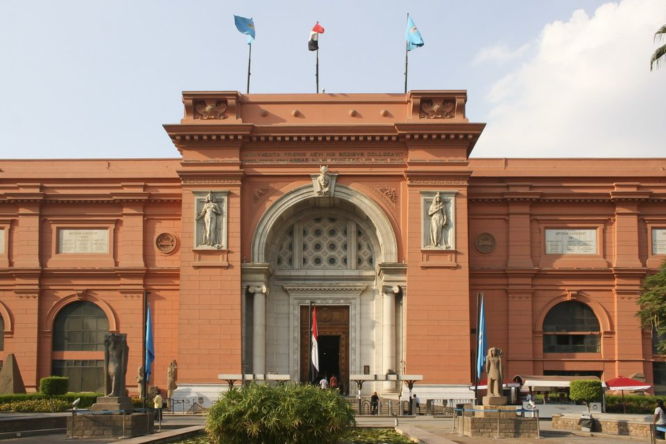

Egypt · Cairo
Egyptian Museum, Tahrir Square, Cairo audio guide
16 stops · 30 min
Billed in ZAR
Unlocks in this browser after payment.
Narmer to Psusennes: Cairo's first great museum. Listen here, or get the Earwise app to play as you walk.
Stops
- 1
A pink palace for the pharaohs
Just inside the main entrance of the museum, on the north side of Tahrir Square. This is stop 1 on the route.
Play0:00 / –:––Read along
This is the Egyptian Museum on Tahrir Square. Egypt's Ministry of Tourism and Antiquities has called it the Middle East's oldest archaeological museum. It has also said that no collection of pharaonic antiquities anywhere is larger.
The building has a story of its own. In 1895 Egypt held an international competition to choose its architect. The Ministry says it was the first competition of its kind. A French architect, Marcel Dourgnon, won it. The foundation stone was laid in 1897. It was one of the earliest buildings in the region to be made with reinforced concrete. Khedive Abbas Helmy the Second, Egypt's ruler, opened the museum in 1902.
Why build it at all? Because the collection kept outgrowing its homes. It began with another Frenchman, Auguste Mariette. In 1858 he became the first director of Egypt's new antiquities service. He stored his finds in a former warehouse at Bulaq, beside the Nile.
Bulaq was a risky place for treasures. A severe Nile flood in 1878 damaged objects there. Many of Mariette's own drawings and notes were lost in the water. After that, the collection moved to part of a palace of Khedive Ismail at Giza. Only then did it come here, to a building made for it.
Mariette did not live to see it. He died in 1881. His wish was to be buried in his museum's garden. His tomb was moved to the garden here when this building opened.
The building is a monument in its own right. It is listed on Egypt's register of heritage sites for its architecture. A senior archaeologist at the Ministry, Magdy Shaker, has called the museum a witness to two births. One is the birth of ancient Egyptian civilisation, told by its objects. The other is the founding of Egyptology as a discipline.
- 2
A museum that keeps changing
In the central part of the museum, among the large statues. This is stop 2 on the route.
Script and audio included when you buy - 3
The Narmer Palette
At the glass case holding the Narmer Palette, a flat shield-shaped slab of dark stone carved on both faces. This is stop 3 on the route.
Script and audio included when you buy - 4
Djoser, the oldest life-size statue
In front of the seated, painted limestone statue of King Djoser. This is stop 4 on the route.
Script and audio included when you buy - 5
Khufu, the builder of the Great Pyramid, in ivory
In front of a very small case holding a tiny ivory figure of a seated king. This is stop 5 on the route.
Script and audio included when you buy - 6
Khafre enthroned
In front of the large seated statue of King Khafre in dark stone, with a falcon behind his head. This is stop 6 on the route.
Script and audio included when you buy - 7
Rahotep and Nofret
In front of the painted limestone statues of a seated prince and his wife, side by side. This is stop 7 on the route.
Script and audio included when you buy - 8
The Meidum Geese
In front of the framed fragment of wall painting showing geese (the layout may change; follow the museum's signs). This is stop 8 on the route.
Script and audio included when you buy - 9
Sheikh el-Balad
In front of the lifelike wooden statue of a heavy-set man holding a staff. This is stop 9 on the route.
Script and audio included when you buy - 10
Menkaure between the goddesses
In front of a grey stone group of a king standing between two women. This is stop 10 on the route.
Script and audio included when you buy - 11
Mentuhotep the Second, the black king
In front of the dark seated statue of King Mentuhotep, wearing the red crown. This is stop 11 on the route.
Script and audio included when you buy - 12
Amenhotep III, Tiye and their daughters
Beneath the giant limestone group of a seated king and queen (if it is on show). This is stop 12 on the route.
Script and audio included when you buy - 13
The colossus of Akhenaten
In front of the huge sandstone statue of a king with a long face and heavy hips. This is stop 13 on the route.
Script and audio included when you buy - 14
The Merneptah Stele
In front of a tall black granite stele crowned with a carved scene. This is stop 14 on the route.
Script and audio included when you buy - 15
Psusennes and the silver coffin
Beside the cases of gold and silver treasure from Tanis, in front of the gold funerary mask of a king. This is stop 15 on the route.
Script and audio included when you buy - 16
Yuya and Thuya
In front of the gilded masks and funerary equipment of Yuya and Thuya. This is stop 16 on the route.
Script and audio included when you buy
On the map
All 16 stop pins for this guide are marked. Open map